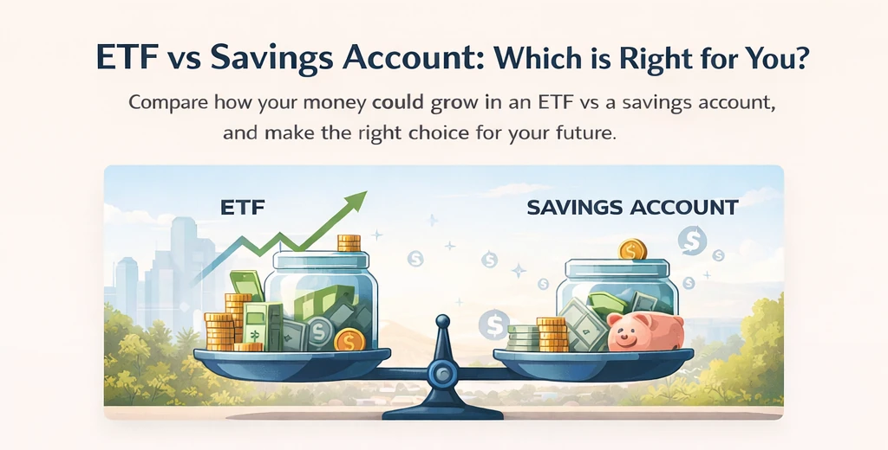

Compare how your money could grow in an ETF vs a savings account over time (based on your assumptions).
Difference: $
This chart shows your projected end‑of‑year balance using monthly compounding.
Historically, diversified market investments have often returned more than cash savings over long periods — but they also come with volatility and risk.
No. ETF returns fluctuate. This calculator uses your chosen return rate as an assumption so you can compare scenarios.
Because compounding amplifies the difference between two rates. The longer the time horizon, the more rate differences matter.
No. Fees and taxes can reduce real-world returns. Use this as a directional comparison rather than an exact forecast.
Try a conservative ETF return assumption and compare multiple timelines (10, 20, 30 years). For compounding basics, see How it works →